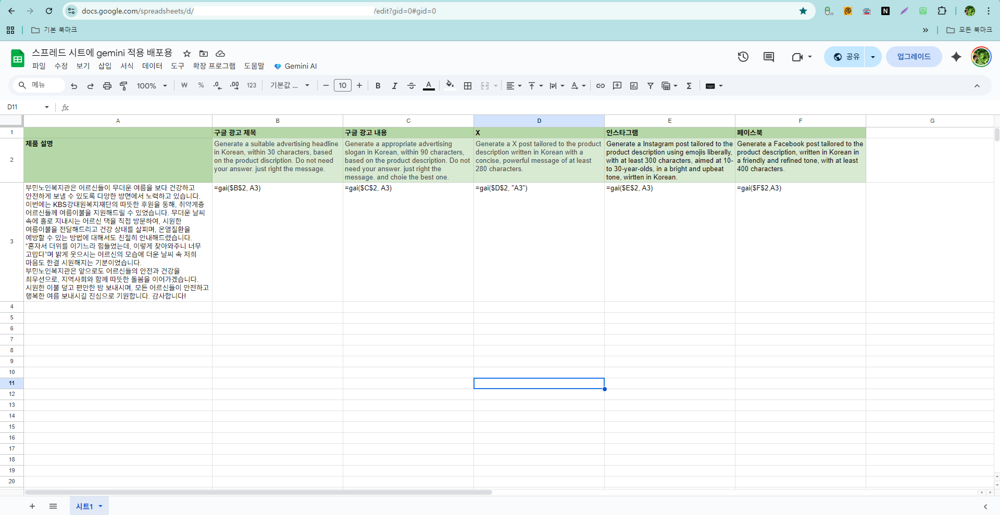

구글 스프레드시트의 셀 안에서 인공지능 함수를 직접 호출하여 사용합니다.
커스텀 함수 =gai("프롬프트", 범위)를 통해 수천 개의 행 데이터를 한꺼번에 분석하거나 자동화할 수 있습니다.
🔢
AI 커스텀 함수
기본 엑셀 함수처럼 셀에 수식을 입력하여 AI 답변을 받아옵니다.
⚡
대량 데이터 처리
여러 셀의 데이터를 참조하여 분류, 번역, 감성 분석 등을 일괄 처리합니다.
=gai("번역 한글로", A2)

스프레드시트 내 AI 함수 적용 화면